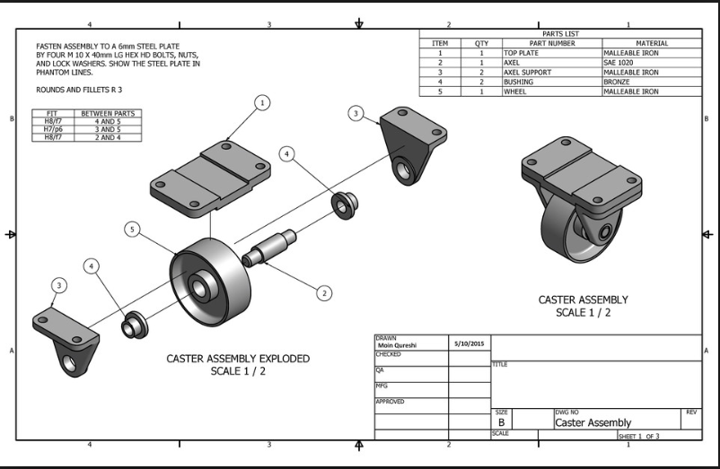

Computer-Assisted Design (CAD)
The Computer-Assisted Design (CAD) course introduces students to digital tools that profoundly transform how engineering projects are conceived, developed, and communicated. Throughout the course, students will learn to use specialized software (SolidWorks) to model parts and mechanical systems, generate technical drawings, create complex assemblies, and perform basic simulations of functionality and resistance. This subject is fundamental because it allows future professionals to translate their ideas into the digital world with precision and efficiency, something indispensable in highly competitive industrial environments. In fields like Electromechanics and Industrial Engineering, mastery of CAD tools not only improves engineer productivity but also opens doors to better communication with design, manufacturing, maintenance, and quality teams.
Learning Objectives
- Use CAD software to model parts and mechanical assemblies with technical precision
- Interpret and generate technical drawings according to industrial drawing standards
- Apply functional and manufacturable design principles in digital projects
- Employ basic analysis and simulation tools within the CAD environment
- Integrate digital design as part of the industrial product development cycle
- Create parametric 3D models of mechanical parts using computer-aided design software
- Generate digital assemblies of components, controlling geometric relationships and degrees of freedom
- Prepare for CSWA/CSWP certification through practical exercises and projects
Course Outline
-
Topic 1: Introduction to CAD
- Basic principles of 3D CAD modeling
- Types of CAD software and classification
- SolidWorks interface: menus, commands, file management
- Initial environment configuration: units, templates, quick access
- Workspace organization: design tree, command bar, visualization
- 2D sketching tools: sketch entities, dimensions, geometric relations
- Solid modeling operations: extrusion, revolution, sweep, loft
- Geometry editing: cuts, fillets, chamfers, holes
- Use of patterns (linear, circular, symmetry)
- Integration of curves, surfaces, and weldments for complex geometries
- Basic appearance application for presentation
- Insertion and editing of components in assembly environment
- Application of mates: coincident, parallel, concentric, etc.
- Interference detection and freedom of movement verification
- Use of subassemblies and hierarchical structures
- Mechanism animation and motion studies
- Introduction to computer-aided engineering (CAE)
- Fundamentals of finite element method (FEM/FEA)
- Types of analysis: static linear, thermal, buckling
- Model preparation: simplifications, boundary conditions, loads
- Mesh configuration and refinement
- Study execution with SolidWorks Simulation
- Results interpretation: displacements, stresses, safety factors
- Creating drawings from 3D models
- Sheet format selection and template editing
- Insertion of standard views, sections, details, and isometrics
- Application of dimensioning standards (ISO/ASME)
- Notes, symbols, welding or surface treatment indications
- Bills of materials (BOM) and hole tables
- Export to PDF/DXF and drawing quality control
Topic 2: Part Modeling
Topic 3: Assemblies
Topic 4: CAE Analysis - Finite Element Simulation (FEA)
Topic 5: Technical Drawing Generation

GPU acceleration revolutionizes CAD workflows by enabling real-time rendering of complex assemblies, instant visualization of design changes, and rapid execution of finite element analyses that would take hours on traditional CPUs. Students can leverage GPU-powered workstations to perform photorealistic rendering of their designs, run topology optimization algorithms to minimize material usage while maintaining structural integrity, and execute parametric studies across thousands of design variations. With campus GPU infrastructure, learners can work with assemblies containing thousands of components, perform real-time interference detection, and simulate complex mechanisms with fluid dynamics or thermal analysis. This computational power prepares students for modern engineering environments where generative design, AI-assisted optimization, and digital twins are becoming standard practice in companies like Tesla, SpaceX, and Siemens.
Instructor
Álvaro Ugarte Quispe
Industrial Engineer - CAD and Digital Design Expert